<mat-toolbar>
    <div class="logo-container">
      
    </div>
    <span class="spacer"></span>
    <button mat-stroked-button (click)="openAboutModal()">ABOUT US</button> &nbsp;&nbsp;   
    <button mat-stroked-button routerLink="/services" routerLinkActive="active">SERVICES</button>&nbsp;&nbsp;
    <button mat-stroked-button routerLink="/portfolio" routerLinkActive="active">PORTFOLIO</button>&nbsp;&nbsp;
    <button mat-stroked-button routerLink="/contact" routerLinkActive="active">CONTACT</button>&nbsp;&nbsp;  
  </mat-toolbar>